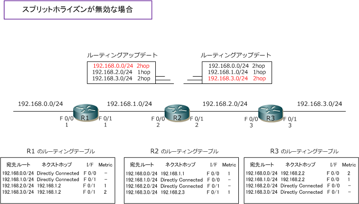
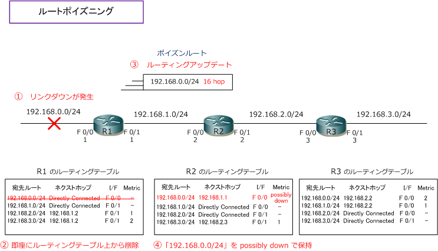
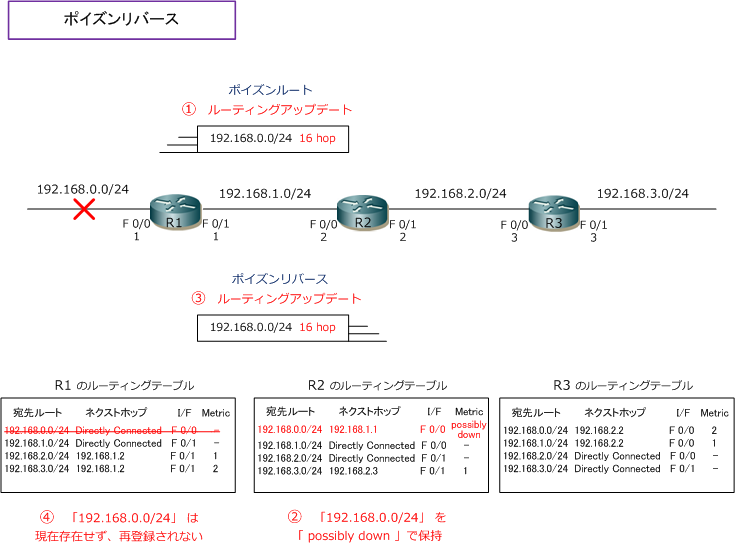

Distance Vector Routing - Part 3
スプリットホライズン
スプリットホライズンとは、あるインターフェースから受信した経路情報を、同じインターフェースから送信 しない機能のこと。スプリットホライズンがR2で無効な場合、下図のルーティングアップデートが行われます。
下図はスプリットホライズン機能が無効な場合の、R2からのルーティングアップデートの内容を示しています。 R2のF0/0で、R1からの [ 192.168.0.0/24 ] の経路情報を受信したのに、F0/0から経路情報を通知し返したり、 R2のF0/1で、R3からの [ 192.168.3.0/24 ] の経路情報を受信したのに、F0/1から経路情報を通知し返したり します。経路情報を受信した方向に通知し返しても、ルーティングテーブルを形成する上で意味がありません。

下図はスプリットホライズン機能が有効な時の、R2からのルーティングアップデートの内容を示しています。 下図の通りR2では、R1から受け取った [ 192.168.0.0/24 ] の経路情報は通知し返したり、R3から受信した [ 192.168.3.0/24 ] の経路情報は通知し返したりしません。これにより前回紹介のR1の 192.168.0.0/24 のリンクで障害が発生したケースでは、R1が誤って経路情報を再学習しないので、無限カウントを防げます。

ルートポイズニング
ルートポイズニングはリンクダウンしたインターフェースの経路情報のメトリック値を最大値にして隣接ルータ に通知する機能のこと。下図で [ 192.168.0.0/24 ] のリンクがダウンしたとします。R1では、その経路情報を すぐにルーティングテーブルから削除します。次に、ダウンした 192.168.0.0/24 の経路情報のメトリック値を 最大の[ 16 ]にして隣接ルータに通知します。これがルートポイズニング。毒(ポイズン)された経路情報を受信 したR2は192.168.0.0/24の経路情報をpossibly down（ダウンしているかもしれない）状態として保持します。

Ciscoルータの場合、IOSバージョンによりpossibly downのマークはshow ip routeではなくshow ip rip databaseで確認できます。
例えばR2でスプリットホライズンが無効な場合も、ルートポイズニングによりルーティングループを防げます。 R2でスプリットホライズンが無効でも、R1からルートポイズニングが行われていればR2は 192.168.0.0/24 の経路をホップ数 16 として送信するので、ホップ数16の経路はR1のルーティングテーブルに登録されません。
ポイズンリバース
ポイズンリバースは、到達不能な経路情報を受信した場合 (RIPならメトリック値16の経路情報を受信した場合) 受信した経路情報のメトリック値を最大値の状態のまま、同じインターフェースから隣接ルータに通知する機能。 ポイズンリバースの動作は、スプリットホライズンよりも優先されます。ループを回避するための必須機能です。
下図は先ほどのポイズンルートの図の続きです。リンクダウンを検知したR1がR2にポイズンルートを送信すると つまり、到達不能な経路情報をR2が受信すると、R2は 192.168.0.0/24 のメトリックを 16 で送り返します。 R1では、ルーティングテーブルに 192.168.0.0/24 は存在せず受信経路のホップ数が16のため登録されません。 ※ R2でスプリットホライズン機能が有効な場合でもこの動作は行われます（ポイズンリバースが優先されます）

Ciscoルータの場合、IOSバージョンによりpossibly downのマークはshow ip routeではなくshow ip rip databaseで確認できます。